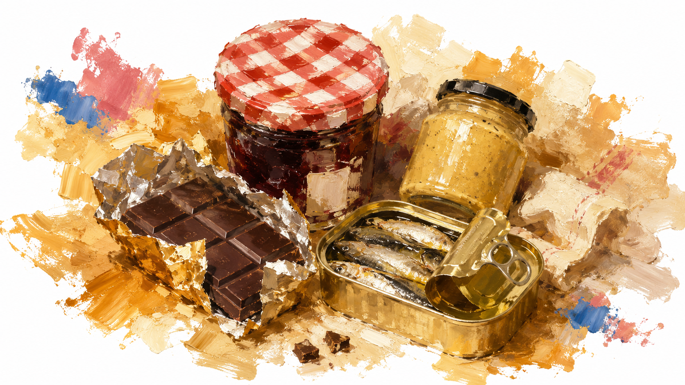

スーパーで手軽に買える、さすけと先輩カップルのおすすめ品です。あわせて、パッケージを見て迷いやすい食材の見分け方もまとめました。

フランスのスーパーは同じ商品でも種類が細かく分かれていて、パッケージのフランス語表記だけだと日本人には分かりにくいものがあります。よく迷うものをまとめました。
バター(beurre)
doux(ドゥー)=無塩バター。demi-sel(ドゥミセル)=有塩(加塩)バター。フランスでは有塩バターがパンに塗る定番として人気で、日本の無塩前提の感覚とは逆なので、お菓子作りに使うなら"doux"を選んでください。
牛乳(lait)
entier(アンティエ)=成分無調整・全脂乳。demi-écrémé(ドゥミエクレメ)=低脂肪乳(青いパッケージが多い)。écrémé(エクレメ)=無脂肪乳(赤いパッケージが多い)。普段の日本の牛乳に近い濃さが欲しければ"entier"を選ぶのが無難です。
クリーム(crème)
crème liquide(クレーム・リキッド)=液状の生クリーム(泡立てて使うタイプ)。crème entière(クレーム・アンティエール)=乳脂肪分の高い濃厚生クリーム。crème fraîche(クレーム・フレッシュ)は要注意で、日本の「フレッシュクリーム」とは違い、乳酸発酵させた少し酸味のあるサワークリームに近いものです。純粋な甘い生クリームが欲しい場合は"crème fraîche"ではなく"crème liquide"や"crème entière"を選んでください。
用途別に探す
ホテルの部屋で軽く食べたい: 個包装のクッキー・チョコレート、常温保存できるヨーグルト系デザート。朝食用: パン・ジャム・オレンジジュース(jus d'orange)。10€以下のばらまき土産向き: 板チョコ、ビスケット缶、はちみつの小瓶など。冷凍食品専門チェーンPicardは、マカロンやガレット等を冷凍のまま持ち帰るのは現実的ではないため観光客向きではなく、主に自炊・長期滞在者向けの位置づけです。
主なスーパーチェーン
Monoprix(モノプリ): 都心に多く、食品からコスメ・雑貨まで揃うやや高級路線。観光客が立ち寄りやすい。Carrefour(カルフール): フランス最大手、郊外の大型店から都心の小型店(Carrefour City/Market)まで規模が幅広い。Franprix(フランプリ): パリ市内に非常に店舗数が多い小型スーパーで、ホテル近くで見つけやすい。Picard(ピカール): 冷凍食品専門チェーン。
さすけが実際に買って良かった、または気になっているスーパーの商品です。
近日公開予定です。
実際にパリで前撮りをした先輩カップルから届いたおすすめです。「投稿する」ページからの投稿を確認のうえ掲載しています。
まだ投稿がありません。「投稿する」からぜひ教えてください。
現在地、またはホテル名・住所を入力すると、近いスーパーで買えるおすすめ品を距離順に表示します